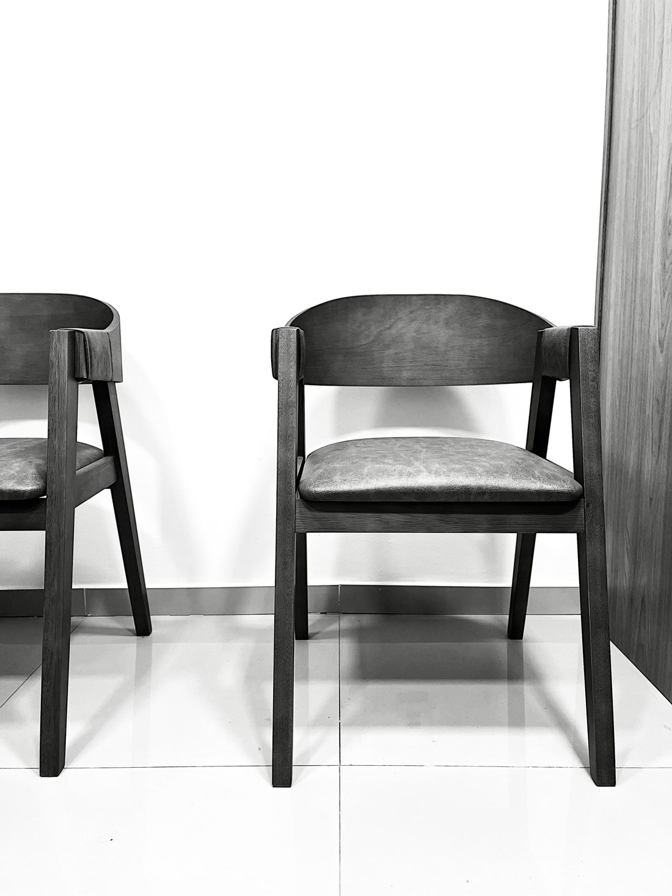

Você chama no WhatsApp e conta sua história.
Sem formulário, sem juridiquês. Uma conversa.
Advocacia previdenciária
Agora é a vez dela retribuir.
Advocacia previdenciária no Rio de Janeiro.
Advocacia previdenciária no Rio de Janeiro. Análise do seu caso pelo WhatsApp.
Simples de começar
A maioria das pessoas chega aqui depois de tentar sozinha e travar. Começar com a gente é bem mais simples do que parece.
Sem formulário, sem juridiquês. Uma conversa.
Seu histórico de contribuição, lido com lupa. Você entende cada passo antes de decidir.
Atualizações do seu processo, sem você precisar cobrar.
Honorários explicados com clareza antes de qualquer assinatura. Você decide sabendo os números, não depois.
O que a gente resolve
Benefício negado, valor menor do que deveria, tempo que não foi contado. Cada um desses tem caminho.
Planejamento previdenciário personalizado, com análise do histórico contributivo e definição da melhor estratégia para aposentadoria e benefícios futuros.
Atuação na concessão da aposentadoria por idade, com análise de requisitos legais, tempo de contribuição e documentação necessária.
Atuação em pedidos de aposentadoria por incapacidade permanente, inclusive em casos de indeferimento administrativo.
Atuação em aposentadoria rural, com comprovação de atividade campesina e orientação quanto à documentação exigida.
Atuação em aposentadorias decorrentes de exposição a agentes nocivos, com análise de tempo especial e conversão.
Atuação em Benefício de Prestação Continuada (BPC/LOAS), com análise da renda familiar e dos critérios legais de vulnerabilidade, em favor de idosos e pessoas com deficiência.
Atuação em requerimentos e revisões de auxílio-doença, com acompanhamento técnico em casos de incapacidade temporária.
Atuação em pedidos de auxílio-acidente decorrente de sequelas permanentes que reduzam a capacidade laboral.
Atuação na concessão do auxílio-reclusão aos dependentes da pessoa privada de liberdade, conforme os critérios legais e previdenciários vigentes.
Atuação na concessão do benefício à segurada, com análise dos requisitos legais aplicáveis.
Atuação na concessão de pensão por morte, com análise da qualidade de segurado e da condição de dependente.
Análise técnica e atuação em revisões de aposentadoria, visando a correção de valores e critérios de cálculo.
Atuação em pedidos de isenção do imposto de renda para aposentados e pensionistas portadores de doenças graves.
Seu caso não está na lista? Chama no WhatsApp que a gente te orienta.
Cada ano seu conta
É exatamente isso que fazemos com o seu histórico: ano por ano, até o último mês.
Uma vida de trabalho não pode se perder num cadastro. A gente confere ano por ano.

Por que a Pinho & Pinho
A gente diz o que dá para fazer e o que não dá. Análise honesta antes de qualquer contrato, e trabalho bem feito depois dele.
Perguntas de verdade
A análise inicial pelo WhatsApp é simples e sem compromisso. Honorários seguem a tabela da OAB e são explicados antes de qualquer assinatura. Você decide sabendo os números.
Não. Negativa não é o fim: é o começo do trabalho. Boa parte dos casos se resolve com recurso ou revisão bem feitos, e o primeiro passo é entender o motivo exato da negativa.
Pode. Mas um vínculo que não aparece no cadastro, ou um cálculo errado, custa caro pelo resto da vida. Nosso trabalho é não deixar nada para trás.
Não. Tudo pode ser pelo WhatsApp e por reunião online. Se preferir presencial, são três endereços no Rio.
Depende do caso, e a gente te diz o prazo realista na análise. O que garantimos: você nunca fica sem resposta.
Onde estamos
Recreio dos Bandeirantes
Absolutto Business Towers
Avenida das Américas, n.º 19.005, Sala 927
Recreio dos Bandeirantes, Rio de Janeiro/RJ
CEP 22.790-703
Campo Grande
Edifício Passeio Empresarial
Rua Campo Grande, n.º 1.014, Sala 201
Campo Grande, Rio de Janeiro/RJ
CEP 23.080-000
Santa Cruz
Galeria do Prado
Rua do Prado, n.º 6, Salas C e D
Santa Cruz, Rio de Janeiro/RJ
CEP 23.555-012
Conta sua história. A gente diz o caminho.
Falar no WhatsApp+55 21 99961-8351